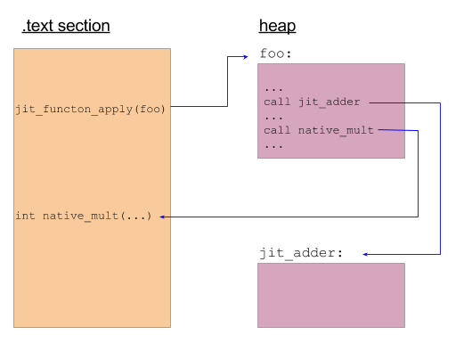

This is part 2 in a series of articles on libjit. Part 1 served as a basic introduction to the library and showed how to get started, along with some simple performance measurements. In this part, I want to discuss how to implement more interesting things with libjit, focusing on the fascinating boundary between JITed and host code.
The "host" is the program that creates machine code at run-time and arranges for it to be executed. It's crucially important to understand this - complexity in the middle notwithstanding, JITing is eventually all about some code in your process calling some other code. On the source level, this may be challenging to envision. Therefore, it's more useful to think about it on the binary level - after the host program is compiled and is actually executed in memory as machine code itself. I hope that the examples in this article will help explaining this concept. As usual, I'm using a pseudo-literate-programming approach - if the code samples aren't as readable as prose, please let me know.
Calls from JITed to JITed and from JITed to host
The iterative GCD example in Part 1 demonstrated a self-contained JITed function that made no external calls. Let's now look at a more involved example - how JITed functions can call other JITed functions, and how they can call code in the host. The full code, as usual, is in the libjit-samples repository. Here I'll reveal it gradually, with explanations. Let's start by defining this simple JITed function:
// Builds this function, and returns an uncompiled jit_function_t:
//
// int jit_adder(int x, y) {
// return x + y;
// }
jit_function_t build_jit_adder(jit_context_t context) {
jit_context_build_start(context);
// Create function signature and object. int (*)(int, int)
jit_type_t params[2] = {jit_type_int, jit_type_int};
jit_type_t signature = jit_type_create_signature(
jit_abi_cdecl, jit_type_int, params, 2, 1);
jit_function_t F = jit_function_create(context, signature);
// x, y are the parameters; sum is a temporary
jit_value_t x = jit_value_get_param(F, 0);
jit_value_t y = jit_value_get_param(F, 1);
jit_value_t sum = jit_value_create(F, jit_type_int);
// sum = x + y
jit_value_t temp_sum = jit_insn_add(F, x, y);
jit_insn_store(F, sum, temp_sum);
// return sum
jit_insn_return(F, sum);
jit_context_build_end(context);
return F;
}
[if you went over part 1, this code should be trivial to grok].
Now, let's define a very simple function in the host program:
int native_mult(int a, int b) {
return a * b;
}
Finally, let's use libjit to build a JITed function that does this:
// void foo(int x, int y, int* result) {
// int t = jit_adder(x, y);
// *result = native_mult(t, y);
// }
There are at least two things here we haven't seen before. One is calling jit_adder - a JITed function. The other is calling native_mult - a host function. Without further ado, here's how we build foo:
// Returns an uncompiled jit_function_t
// Note that jit_adder is a jit_function_t that's passed into this builder.
jit_function_t build_foo(jit_context_t context, jit_function_t jit_adder) {
jit_context_build_start(context);
// Create function signature and object. void (*)(int, int, void*)
// libjit treats all native pointers as void*.
jit_type_t params[] = {jit_type_int, jit_type_int, jit_type_void_ptr};
jit_type_t signature = jit_type_create_signature(
jit_abi_cdecl, jit_type_void, params, 3, 1);
jit_function_t F = jit_function_create(context, signature);
// x, y, result are the parameters; t is a temporary
jit_value_t x = jit_value_get_param(F, 0);
jit_value_t y = jit_value_get_param(F, 1);
jit_value_t result = jit_value_get_param(F, 2);
jit_value_t t = jit_value_create(F, jit_type_int);
// t = jit_adder(x, y)
jit_value_t adder_args[] = {x, y};
jit_value_t call_temp = jit_insn_call(
F, "jit_adder", jit_adder, 0, adder_args, 2, 0);
jit_insn_store(F, t, call_temp);
// Prepare calling native_mult: create its signature
jit_type_t mult_params[] = {jit_type_int, jit_type_int};
jit_type_t mult_signature = jit_type_create_signature(
jit_abi_cdecl, jit_type_int, params, 2, 1);
// x = native_mult(t, y)
jit_value_t mult_args[] = {t, y};
jit_value_t res = jit_insn_call_native(
F, "native_mult", native_mult, mult_signature,
mult_args, sizeof(mult_args) / sizeof(jit_value_t), JIT_CALL_NOTHROW);
jit_insn_store(F, x, res);
// *result = x
// Note that this creates a store of a value libjit considers to be a
// jit_type_int, so the pointer must point to at least that size.
jit_insn_store_relative(F, result, 0, x);
jit_context_build_end(context);
return F;
}
The new libjit APIs used here for calling into other JITed code and into host code are jit_insn_call and jit_insn_call_native, respectively. One interesting thing to note is that for the native function, the libjit API accepts the raw function pointer - the address of the host function in memory. To know how to pass parameters to the native function and how to receive the return value back from it, a libjit "signature" is created with jit_type_create_signature first.
I had previously mentioned the boundary between JITed and host code. The following diagram will hopefully help clarify what I mean:
What it tries to depict is what actually happens at run-time when the JITed foo is executed. It calls jit_adder, which was also JITed so it's somewhere on the heap (see my introduction to JITing for more background). It also calls native_mult, which resides within the host program, so it's in the .text section. As stated before, understanding the program flow at this level is easier than at the source level, because when the program runs, host code and JITed code are practically equals - they're both chunks of machine code tucked somewhere in the executable memory pages of the running process.
Passing pointers from host to JITed code
Another novelty introduced by build_foo is that the result is not return-ed to the host code. Rather, the host code passes a pointer into the JITed code, into which foo writes its result. libjit makes this quite easy to express. The third argument of foo is declared to be a pointer in the signature. Then, jit_insn_store_relative is called, which expects a pointer as its destination argument, along with an offset and generates code to store the value to [dest + offest].
Here's how we invoke foo:
// Run foo with arguments and return its result
int run_foo(jit_function_t jit_foo, int x, int y) {
int result, *presult = &result;
void* args[] = {&x, &y, &presult};
jit_function_apply(jit_foo, args, NULL);
return result;
}
The way result is passed in needs some explaining. jit_function_apply accepts args as an array of void*; quoting from the docs - "each element in args is a pointer to one of the arguments". So normal (non-pointer) arguments are also passed by pointer as you see above. What do we do, then, when we actually need to pass a pointer in? Right, we also pass it by pointer, just like everything else. Hence presult.
Using the standard C library from JITed code
We've seen how JITed code can call native code using jit_insn_call_native. Can the same technique be used to leverage the standard C library from JITed code? Absolutely. C library functions are just normal native functions after all. Let's see an example. The following is a code sample that JITs a simple void foo() and makes it call puts to print out a string.
// void foo()
jit_function_t F = jit_function_create(context,
jit_type_create_signature(jit_abi_cdecl, jit_type_void, NULL, 0, 1));
// Approach #1: allocate the string buffer on stack inside the jit-ed
// function and store the desired characters into it.
// char* bufptr
#define CONST_BYTE(v) (jit_value_create_nint_constant(F, jit_type_ubyte, v))
jit_type_t type_cstring = jit_type_create_pointer(jit_type_sys_char, 1);
jit_value_t bufptr = jit_value_create(F, type_cstring);
// Make bufptr point to a 4-byte buffer allocated on the stack
jit_insn_store(F, bufptr, jit_insn_alloca(F, CONST_BYTE(4)));
// Store "abc" (with explicit terminating zero) into bufptr
jit_insn_store_relative(F, bufptr, 0, CONST_BYTE('a'));
jit_insn_store_relative(F, bufptr, 1, CONST_BYTE('b'));
jit_insn_store_relative(F, bufptr, 2, CONST_BYTE('c'));
jit_insn_store_relative(F, bufptr, 3, CONST_BYTE('\x00'));
// Create the signature of puts: int (*)(char*)
jit_type_t puts_signature = jit_type_create_signature(
jit_abi_cdecl, jit_type_int, &type_cstring, 1, 1);
// puts(bufptr);
jit_insn_call_native(
F, "puts", puts, puts_signature, &bufptr, 1, JIT_CALL_NOTHROW);
// Approach #2: use the address of a string literal in the host code
// directly, storing it into a constant. Note that this has to explicitly
// specify that host pointers are 64-bit.
jit_value_t hostmemptr = jit_value_create_long_constant(
F, type_cstring, (long)"foobar");
jit_insn_call_native(
F, "puts", puts, puts_signature, &hostmemptr, 1, JIT_CALL_NOTHROW);
jit_dump_function(stdout, F, "F [uncompiled]");
jit_function_compile(F);
jit_dump_function(stdout, F, "F [compiled]");
// Run
jit_function_apply(F, NULL, NULL);
This code demonstrates two alternative ways to get a string constant into the JITed code:
- Using purely JITed instructions to allocate a 4-byte buffer on the stack and store the characters {'a', 'b', 'c', '\0'} into it.
- Passing a pointer to the host-allocated string constant "foobar" with jit_value_create_long_constant.
The first way is more straightforward, IMHO, because the second one touches once more on the interface between host and JITed code. When jit_value_create_long_constant is called, it expects a numeric constant. By passing (long)"foobar" into it, we pass the address of the string constant [1]. When the JITed code runs and tries to access this address (by passing it to puts - back into host-code!), the address still points at the string constant, so everything works.
Final words
In this article I tried to make a special focus on the interface between host and JITed code. This is to emphasize the importance of this interface - which is sometimes tricky to grok, but nonetheless is one of the most important things about modern JITs.
For example, the technique of passing a host pointer directly to JITed code shown in the previous section is just a hint of the tricks employed by modern JITs. The shared in-process execution of host and JITed code enables such things to be done without losing much performance in the process.
Note that some JITs allow more advanced execution modes, such as a remote code emission mode, where code is emitted to run in a different process. For example, LLVM's MCJIT does that for the LLDB (debugger) use case to emit code that will run in the debugged process's memory space. In this case special provision is obviously required to have references between host and JITed code.

| [1] | Note that by casting the pointer to long, we also expose a platform-specific detail: this code runs on 64-bit Linux, which is LP64. |